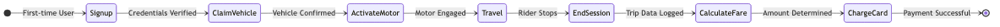
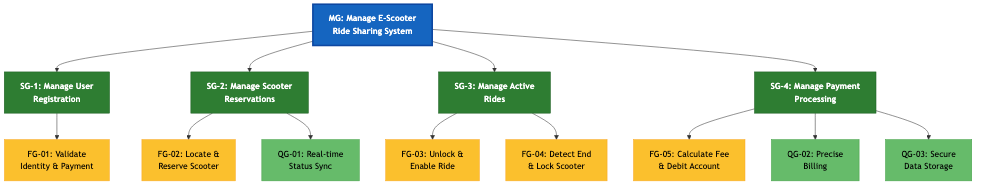

Solution for Exercise 04: E-Scooter Ride-Share System
1. Agents and Roles
Based on the project scenario, the system involves the interaction between the commuter, the physical scooter,
and the backend service.
| Agent |
Assigned Role |
Description |
| Commuter (Human) |
Commuter Role |
Responsible for the user-side process: registering, reserving the scooter, riding safely, and
authorizing payment. |
| E-Scooter (Hardware) |
Fleet Manager Role |
Handles the physical state of the vehicle (locking/unlocking) and reports real-time status
(Idle/Reserved) and location. |
| Backend System (Software) |
Payment Processor Role |
Manages the logic for account verification, fee computation, and secure financial debiting. |
2. Goals
Functional Goals (FG)
- FG-01 (Registration): The system shall allow new commuters to register by validating their
personal identity and payment details.
- FG-02 (Reservation): The Commuter shall be able to locate an idle scooter and reserve it,
changing its status to prevent other users from booking it.
- FG-03 (Commute): The Commuter shall be able to unlock the specific scooter and ride to
their destination.
- FG-04 (End Ride): The system shall detect when the user terminates the ride and immediately
lock the scooter.
- FG-05 (Payment): The system shall automatically calculate the final fee and debit the
registered payment method without manual intervention.
Quality Goals (QG)
- QG-01 (Data Accuracy): The status of all scooters (Idle vs. Reserved) must be updated in
real-time to avoid synchronization errors.
- QG-02 (Billing Precision): The ride fee calculation must be mathematically precise based on
the exact duration recorded by the backend.
- QG-03 (Security): Commuter payment details must be stored securely and only accessed during
the automatic debit process.
3. Ride Cost Computation
The system implements a Time-Based pricing strategy.
| Variable |
Description |
Example |
| UnlockFee |
A fixed starting fee |
€1.00 |
| Duration |
Time difference between Unlock and End Ride (rounded up) |
15 minutes |
| Rate |
Per-minute usage cost |
€0.20 |
4. AOM Behavioral Interface Model (BIM)
The Behavioral Interface Model illustrates the dynamic interaction between roles, consistent with the Leaf Goals
defined in the Goal Model.
Process Flow:
- Registration/Reservation: The Commuter creates an account or reserves an Idle scooter.
- Unlock: Upon successful reservation, the Fleet Manager unlocks the hardware.
- Commute: The Commuter uses the vehicle.
- End Ride: The user ends the session, prompting the Fleet Manager to lock the device.
- Payment: The Payment Processor calculates the fee and debits the account.

Figure 1: Behavioral Interface Model - State Diagram showing ride lifecycle
5. Goal Hierarchy Diagram (3-Level Tree)
The following diagram shows the hierarchical decomposition of goals with 3 levels as required by the assignment.

Figure 2: AOM Goal Model - 3-Level Hierarchy
Diagram Legend:
🔵 Level 1 (Blue): Main System Goal
🟢 Level 2 (Green): Sub-Goals
🟡 Level 3 (Yellow): Functional Goals
🟢 Level 3 (Light Green): Quality Goals
Summary
This solution presents a comprehensive Agent-Oriented Model for an E-Scooter Ride-Share System:
- Three primary agents with distinct roles (Commuter, Fleet Manager, Payment Processor)
- Functional and quality goals ensuring system effectiveness and reliability
- A transparent time-based pricing model with clear formula
- A behavioral interface model illustrating the complete ride lifecycle
- A 3-level goal hierarchy diagram showing goal decomposition